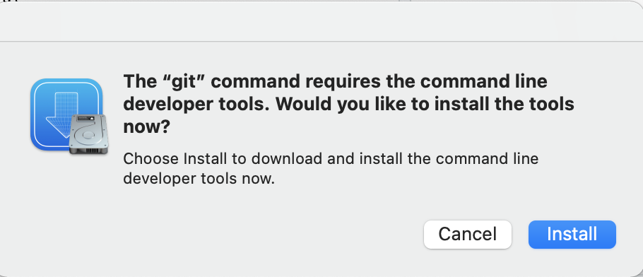
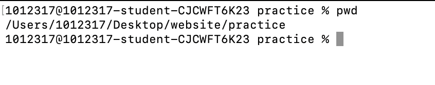
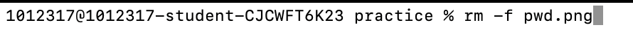
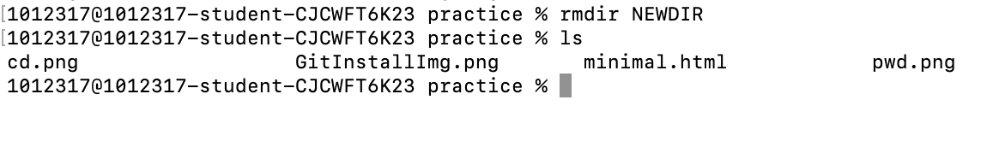

Contents:
- Git
- Know where you are
- How to change your directory
- How to remove files
- How to make and remove directories
- How to copy and move files
1. Git
In order to do ANY of this, you must install git. Git is all the terminal commands that allow you to do these in terminal. In most cases git is not pre installed when you get your computer.
When you run: "git install"

Do NOT worry about this warning, and click "install"
2. Know where you are
Knowing what you are accessing is quite important, especially if you are lost. If you need to know which directory you are in, or even what file you are accessing, type: "pwd"
This stands for print working directory
which will tell you exactly where you are.

3. How to change your directory
Moving around your computer is essential to developing well. This is useful to access different parts of your device and making specific and more efficient changes to files, directories, etc.
In order to change your directory, type: "cd {Ex.Directory}" or " cd .." to go back 1 time

4. How to remove files
Removing files is quite easy and is important to keep your computer clean and your storage usable.
Using "rm {Filename}" you can remove and individual file.
Using "rm -f {Filename}" removes a whole file that has stuff inside of it.

5. How to make and remove directories
Making directories is a great way to organize your computer. You don't need to make directories for them to exist already though. Many directories are prebuilt into your computer.
So, how do you make and remove them? Easy enough, all you have to do is type either "mkdir {Directoryname}" or "rmdir {Existing directory}".

6. How to copy and remove files
Copying and moving files is another essential in terminal. You can duplicate files into new directories to make it easier to access. For example, I copied files into the practice
file in order to display any of the photos you see.
To move a file, type: "mv {filename or location} {new_place_location}"
To copy a file into a new location, type: "cp {filename or location} {new_place_location}"